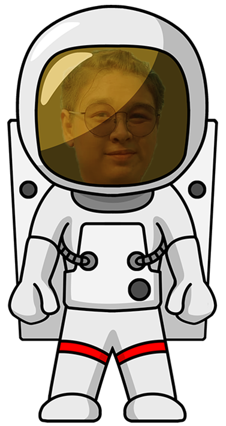

ชื่อ - สกุล นายสิริภูมิ หลิมสุนทร ชื่อเล่น ภูมิ
อายุ 16 ปี เกิดวันที่ 27 มกราคม 2550
สัญชาติ ไทย เชื้อชาติ ไทย ศาสนา พุทธ
คติประจำใจ "เราไม่สามารถเปลี่ยนนิสัยคนอื่นได้ แต่เราเพิ่มหรือลดระยะห่างของความสัมพันธ์ได้ && เราควรถอยห่างจากคนที่ไม่ให้เกียรติแล้วให้ความสำคัญกับคนที่ให้เกียรติเรา"
งานอดิเรก ฟังเพลง นอน ศึกษาหาความรู้เกี่ยวกับการเขียนโปรแกรม

"ความฝัน" คือแรงที่ทำให้ชีวิตของเราขับเคลื่อนไปข้างหน้า
และผมก็เป็นเด็กคนหนึ่งที่มีความฝัน ความฝันของผมน่าจะเริ่มตอนช่วงประถมปลาย
จากการชอบเปิดโปรแกรมต่าง ๆ ในคอมพิวเตอร์ หรือเลือกดูแท็บต่าง ๆ ของเว็บไซต์ แล้วก็เอ๊ะ!
โปรแกรมนี้มีกลไกการทำงานยังไงนะ ทำไมคลิ๊กปุ่มนี้แล้วไปอีกหน้าได้
หรือทำไมกดแท็บนี้บนเว็บไซต์แล้วช่อง URL มันเปลี่ยนแปลงนะ
จนช่วงป.6 ผมได้รู้จักกับอาชีพ "โปรแกรมเมอร์" ได้ลองศึกษาคร่าว ๆ จึงได้รู้ว่านี้แหละ
สิ่งที่ใกล้เคียงหรือตรงกับที่เราสงสัยเลย คือคนที่กำหนดให้เว็บไซต์หรือโปรแกรมทำตามที่กำหนดไว้
หลังจากนั้นผมจึงเริ่มค้นหาคลิปวิดีโอสอนเขียนโปรแกรมต่าง ๆ
แต่ด้วยตอนนั้นผมแทบไม่รู้เลยว่ามันมีภาษาอะไรบ้าง หรือต้องเริ่มจากตรงไหนเลย
เลยยังไม่ค่อยได้อะไรมาก
ผ่านมาช่วงม.2 ผมได้ลองเขียนโปรแกรมภาษาpython ในรายวิชาวิทยาการคำนวณ ผมรู้สึกชอบมาก
มีความสุขที่ได้เรียน ตั้งหน้าตั้งตารอเรียนวิชานี้ แต่ด้วยเวลาที่น้อยผมได้ปฏิบัติแค่ 3 อาทิตย์
ทำให้สิ่งที่ได้มาน้อยนิดมาก ๆ แต่มันก็ทำให้ผมเริ่มจับแนวทางได้
แล้วก็ใช้วิธีเดิมคือค้นหาคลิปวิดีโอที่สอนตามยูทูปแต่เพิ่มเติมคือ รู้คีย์เวิล์ดมากขึ้น
ยิ่งทำให้ผมรู้สึก"ชอบและอยากเดินสู่เส้นทางสายอาชีพนี้มากยิ่งขึ้น"
หลังจากจบม.3 ผมจึงตัดสินใจสมัครเรียนต่อสายอาชีพ ในสาขาเทคโนโลยีสารสนเทศ
ที่วิทยาลัยอาชีวศึกษาธนบุรี และได้เข้าร่วมโครงการ P-TECH ของ IBM
นี้คือจุดเริ่มต้นที่ทำให้ผมตั้งใจและตั้งมั่นว่า "ผมจะต้องเดินทางในสายอาชีพนี้ให้ได้
นี้แหละคือสิ่งที่ตอบโจทย์เราที่สุดแล้ว" มันทำให้ผมมีเป้าหมาย แสงสว่างเริ่มกลับมา
ผมเริ่มมองเห็นอนาคตตัวเอง ผม "มีความสุขในการเรียน" ที่สุดตลอดระยะเวลาที่เรียนมา
ด้วยความรู้ที่มากขึ้นทำให้ผมรับรู้ว่า สายงานนี้มีการแบ่งแยกย่อยไปอีก
และสายงานที่ผมอยากลองและสนใจคือ "Application Developer" ทำให้ผมเลือกที่จะสมัครค่ายนี้
เพื่อค้นหาและได้ลงมือทำ ว่ามันจะตอบโจทย์รึเปล่า สุดท้ายอยากฝากตัวกับพี่ ๆ
รับผมไว้พิจารณาด้วยนะคั้บ ผมอยากเข้าร่วมและอยากเจอพี่ ๆ มากครับ
***สำหรับเว็บนี้จะประกอบไปด้วย 3 หัวข้อคือ @ประวัติส่วนตัว @ผลงาน @กิจกรรมที่เข้าร่วม พี่ ๆ สามารถคลิ๊กตามเมนูตรงheaderได้เลยครับ***

.png)
ประวัติส่วนตัว
profile
Test section2
Test section2
Test section2
Test section2
Test section2
Test section2
Test section2